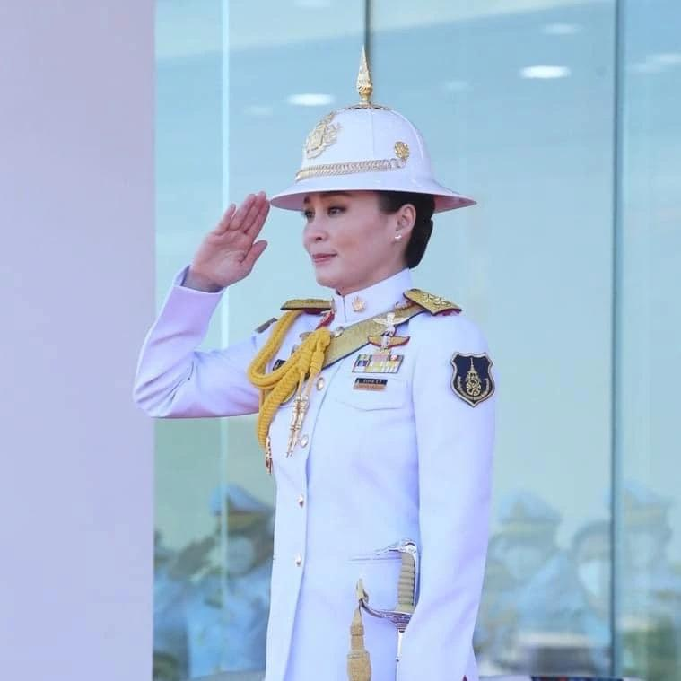

Suthida commence sa carrière militaire en 2010, au sein des unités chargées de la sécurité royale. Elle progresse rapidement dans la hiérarchie et occupe successivement des fonctions d'officier, de commandement et d'état-major. Elle atteint le grade de général, puis devient commandante adjointe du Royal Security Command et occupe des fonctions auprès des gardes royaux.
Parallèlement, elle développe une importante formation aéronautique. Elle commence en 2010 une formation de pilote sur Cessna T-41, puis poursuit en 2012 sa formation à la Royal Thai Air Force sur CT-4E et Pilatus PC-9. Elle complète ensuite sa formation en Allemagne, obtient notamment des qualifications PPL et CPL, ainsi qu'une formation théorique ATPL et une qualification sur Boeing 737. Elle est ensuite reconnue comme copilote des Boeing 737-400 et 737-800 royaux. À plusieurs reprises, elle a été le co-pilote du roi à bord de l'avion les menant à l'étranger pour des visites officielles. Ainsi a-t-on vu le couple atterrir à l'aéroport de Timphu, l'un des plus dangereux au monde, lors de leur rencontre avec le roi du Bhoutan, en avril 2025.
Elle suit également plusieurs formations militaires spécialisées, notamment aéroportée, Marines et combat en jungle.En 2026, des informations thaïlandaises rapportent qu'elle poursuit une formation avancée sur le Saab JAS 39 Gripen, un avion de combat de la Royal Thai Air Force